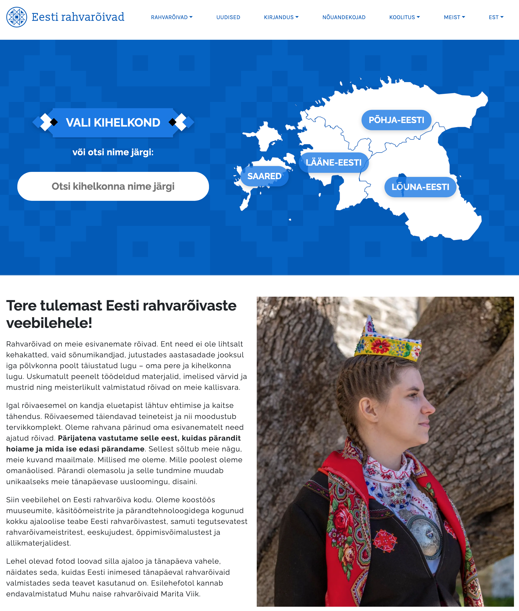
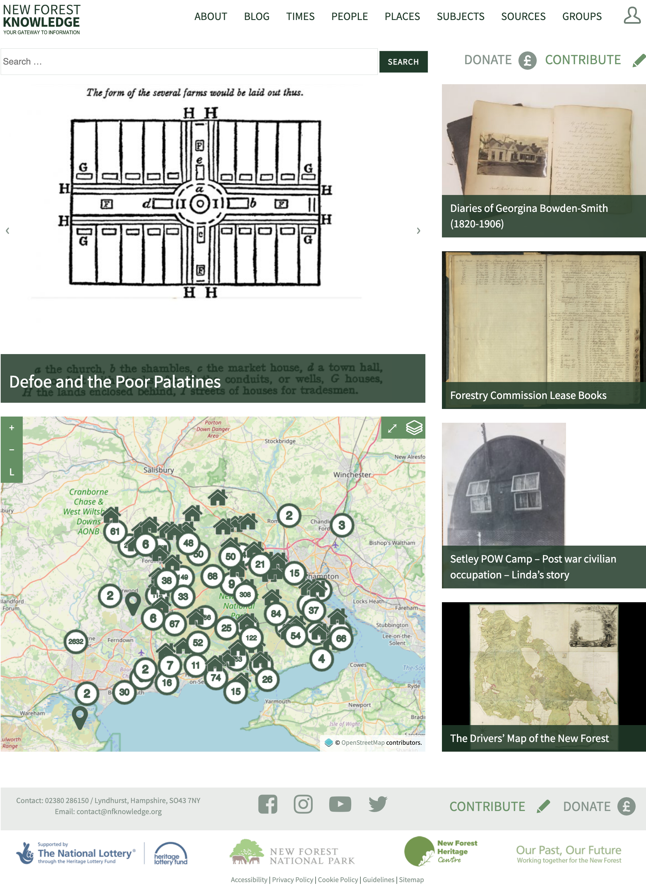

I like what I have done
Below you will find some projects, where I have put in more energy than I received back... because I believe into their goal and vision.
Estonian national costumes
Estonian national costume website is my first experience with React/Next.js. Initial Next.js functionality was written by other developer, my task was to build user interfaces. Now, after one year the site was launched I can see many things what could be done differently. Website uses IIP image server for saving high-quality zoomable images. This website is also one of very few in Estonia which serves all the images based on IIIF standard. This means, that all the images (which is the main focus of the website) with metadata can be viewed and queried by third-party systems.
Have a look: rahvaroivad.ee
Ackermann research project
The Ackermann project involved the documentation and conservation of wooden sculptures by Christian Ackermann in different churches in Estonia. In addition to the recording of the wooden sculptures that we have completed, we built a web/mobile website, as well as kiosk setup for the church.
My role was technical project manager as well as frontend developer.
Have a look: ackermann.ee and exhibition version (requires 4K screen)

New Forest Knowledge
In this project we have created a simple to use website that contains a great level of complexity. It draws together over 20 different types of data sources from external bodies, into one manageable system providing users with access to a wealth of knowledge about the New Forest.
It includes a web mapping system, a data aggregator and an advanced search functionality plus many various bespoke interactive tools which adds a level of usability to the site that other similar systems are unable to provide.
My role was technical project manager as well as frontend developer.
Have a look: nfknowledge.org
Google Chrome extension
This is a bit different project as stuff above. Here my idea was to speed up the processes in the museum by "hacking" the Estonian Museum Information System (MuIS). What I did was the extension for Google Chrome to extend the functionality of MuIS, so that different tasks and queries could be made using barcode scanner. This simple thing helps to save weeks or with the bigger collection in bigger organisations even months of working time.
Have a look: MuISi abiline